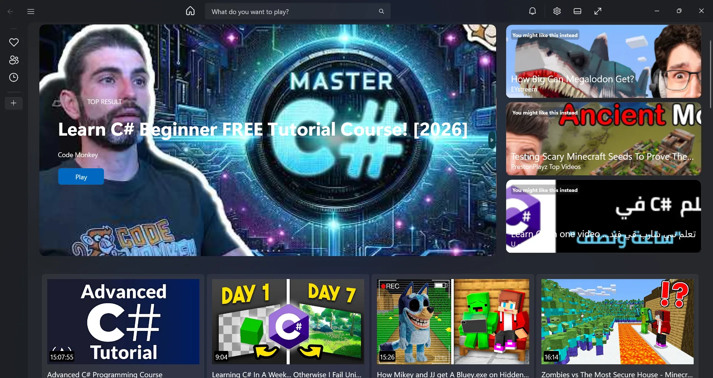
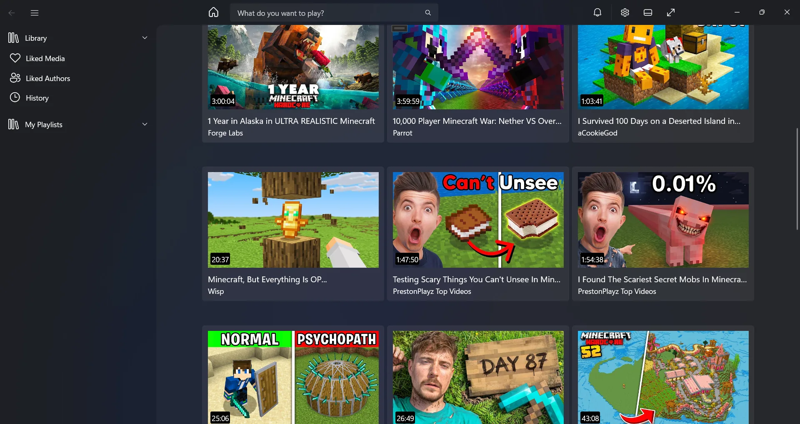
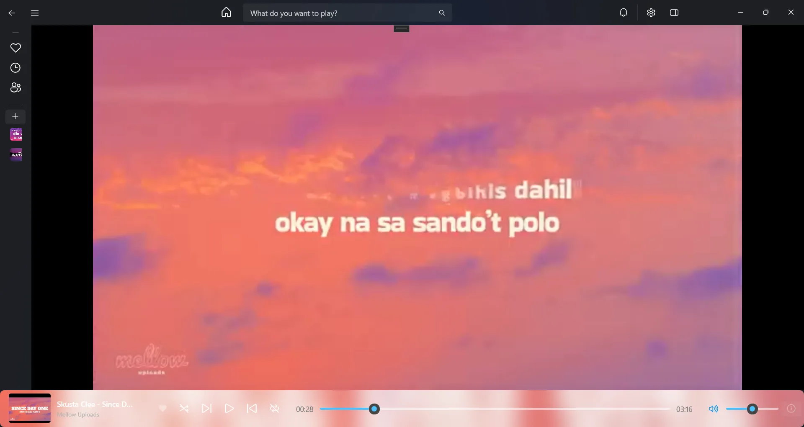
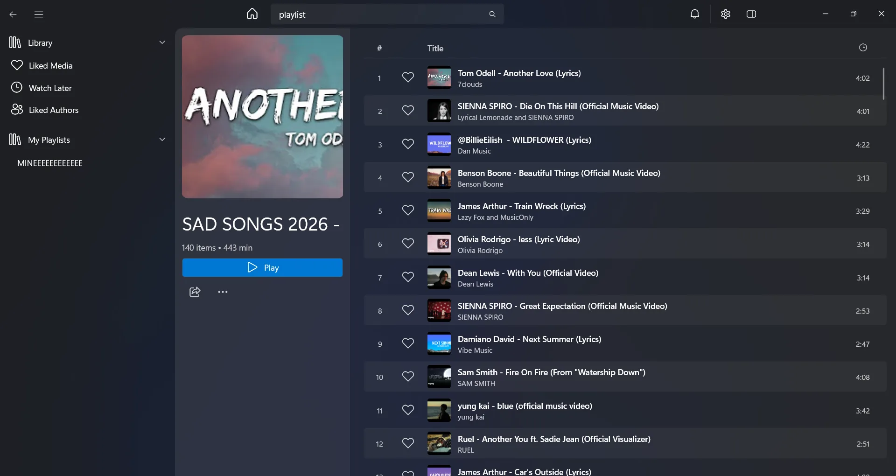

Recommendations that stay on your PC
Nativefy builds its suggestions with its own algorithm, using what you watch and like. Your history never goes to a recommendation server.
Nativefy is a native Windows app for YouTube. No account, no servers, and your entire database lives on your own PC.

Search, queue, save and play from one window that follows Windows design and keeps its data on your disk.
Nativefy builds its suggestions with its own algorithm, using what you watch and like. Your history never goes to a recommendation server.
Liked media, liked authors, history and watch later sit in a sidebar that collapses to icons when you want room for video.

A mini player with shuffle, repeat and seeking stays docked at the bottom while you browse. Open the video when you want to see it.

Open a playlist of 140 tracks and scroll through a striped list with durations and a like button on every row. Press Play to start from the top.

Real screens from Nativefy, captured on Windows.
Thumbnails, durations and channel names in a layout that scales with the window. Collapse the sidebar to fit more on screen.
Nativefy has no cloud side. The app, your accounts, your database and your taste profile all live on the computer you installed it on.
There are no servers at all. Nothing runs in the cloud, so there is nothing to log into, to breach or to shut down.
Create profiles the way you create Windows local accounts. They keep likes, history and playlists separate and never leave the device.
Your entire database lives on your PC: likes, history, playlists and the taste profile behind your recommendations.
Nativefy is written in C# on WinUI 3, with a custom navigation sidebar and a track list built on ItemsView. The source is on GitHub.
No sign-up and no account. Download the latest build or follow development on GitHub.